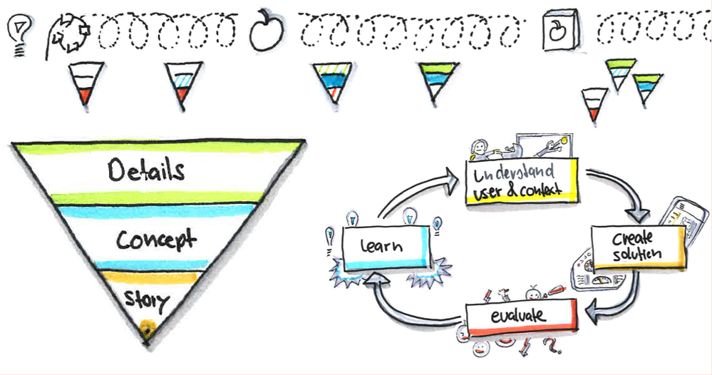

Meet With Users - Often
Meeting with users, the more the better, is essential to create great products.
Even though – as a UX professional – I must stress the importance of meeting users, I have to admit that the title of this article is not exactly accurate and just meeting users is not really the point. Having revealed this, I should probably explain what really matters when meeting users and give some indication on how to do it.
What Really Matters
Challenge #1: We who develop a technical system are not like the users.
This has two notable reasons: (1) The more we are involved in the development the more elaborate is our mental model about the system and how the system is meant to be used. Someone with no involvment has a completely different model and will want to do different things. (2) Even when we are users, we are just some of them. There usually are many more users with quite different needs and mental models. It follows that, as developers of a system, we identify needs that do not represent those of the whole user base and derive functions users will not really use and set inadequate priorities and create user interfaces that do not match the users tasks and expectations.
Conclusion #1: the more we rely on our evaluation of the product we are creating, the more likely the product is going to suck
Things are even more interesting. What users really need changes constantly. And it is most vexing for some of us (for others it is a fantastic opportunity) that we who create technical systems drive change. Introducing new possibilities changes what people are doing, how they are doing it, what they trying to achieve and thus what they expect from the technology we provide.
Challenge #2: a new product changes what people need from a product.
The better we can anticipate the change, the better our products will meet the future needs. And to anticipate a change we have one option: we must create the solution, either as a mock, an MvP or even as a product and we must let users use them as realistically as possible. From this we can learn what the future could behold. By the way, people can get quite creative and do stuff nobody every thought of doing with our products. If we can harness this creative power our products will rock the market. The key is to be one step ahead of the customers. So while they adapt to the new technology, you observe them, learn about their life, create new ideas and start the next cycle.
What really matters: create products quickly and let users use them so you can learn what will be important for your customers
A Bit of Theory on How To Do It
As theoretical background, I need to combine two elements on one time line:

The UCD (User Centred Design) cycle is probably self explanatory. It is the basic iteration principle and tells you to get to know context and users, create solutions, evaluate the solution against context and users, and learn from it. You do this cycle over and over again. Two of the three layers are probalby quite easy to understand as well. While you create the product, you will work on the concept and work-out all the details so using the product really becomes a great experience. The story is the product in a nutshell and tells what impact the product should create for whom and how. It is sometimes referred to as product vision.
The interesting part is how you evolve a product from idea to retirement. Theory proposes to run quick UCD cycles all along. The cycles just change purpose and the character along the way. Early on, you focus the cycles on getting a promising story. You do research and create simple "prototypes" of the story. While the story gets more and more stable some big questions will need answering and the UCD cycle is about testing hypothesis. You create sketchy prototypes or "experience sketches" with a narrow focus so you can make the important conceptual decisions. Early adopters asking when the product is ready are a good sign to change the character again: Now its about scoping the first release and getting the concept right. To do this you will work out some key scenarios in detail, explore more alternatives of the basic design and test these thoroughly. Such activities flow more on more into working and optimizing the details with user experience testing so your first release is going to be just great. Once the release is on the market things get complicated as you need to juggle three streams: The first stream to optimize the details based on real life feedback, the second stream to enhance the product with other features and the third stream to identify completely new ideas to launch the next big product.
From the Trenches
Get inspired by life
Usually, meeting with users starts with life as of today. Go an observe people, talk with them about what they are doing, why, what they love and what they hate. You can also become an apprentice and do it yourself, instructed by a master. Identify their tasks, their values and beliefs, what they try to achieve and what hinders them. The goal: Gain understanding of users and their context, identfy and test possible stories.
Methods that help here for meeting with users:
- Contextual inquiry & design, observations
- UX questionnaires and benchmarks
- Empathy maps and response cards
- Storytelling, storyboarding
- Mock-ups and lo-fi prototyping.
Things to be aware of
- You will learn a lot already from the first session. Avoid doing all the sessions first and then analysing them. Rather steer your progress with a list of open questions, analyse each session immediately and rework your open questions.
- Participants will give you many solutions. Listen and learn what they really wanted to achieve and come up with even better solutions.
- Avoid ticking off questions from a prepared questionnaire.
- You need a wide range of opinions so pick a wide variety of participants.
- The gist of the problem lies in the daily hassles. Thus go and do or talk about real work and real examples. Avoid talking about generalisations. Collect concreate real life stories to drive product development.
- Capture the details as direct quote, collect pictures, materials, forms people are using. These material will later allow you to quickly create prototypes that can handle real life problems.
- You need to consolidate your learnings over several participants: a big wall and sticky notes do the trick.
- Be sensitive to commonalities and differences between the different persons you talked to and work them out. There is no average user.
As a result of such acitivities you can expect to have much deeper knowledge about users, their life, their work and their dreams as well as loads of ideas on how to achieve a dream or two.
Evolve the product story
A product story touches at least some of the very fundamental questions of the product definition. I.e. the problem (for whom, what situations, what impact), the solution (what product and what it replaces), the market (size, revenue-cost-structure, players) and the plan (main features, architecture, migration strategy, team, time and money needed). Just filling out a lean canvas or creating a storyboard is not enough to evolve the product story. When we do this we must probe the users and get some more substantial evidence. Is the problem relevant? Does the solution fit? There are a bunch of more or less complete method frameworks like design thinking, design sprint, user experience sketching, contextual design, lean startup and more. Whatever the name, in the essence, they tell to build a team that iteratively creates and evaluates solutions with users/customers, learn from the feedback about problem, solution and product story.
A few methods to use here for meeting users:
- UX sketches, physical mock-ups and paper prototypes
- Narratives, storyboards
- MvPs and test implementations.
- Hallway testing, UX walkthroughs
- Wizard of Oz testing
- UX questionnaires, metrics and benchmarks
- Empathy maps, Response cards
There are also techniques to co-create solutions together with selected users, making the feedback loop even faster. In a typical participatory session the team chooses one aspect of the solution to discuss with users, creates simple building blocks and lets a group of users work with them. While users discuss how to best solve the aspect, the team listens and observes and gains understanding about the different needs and possible solutions. The team can obviously also propose solutions and by that bring their creativity and design expertise into the workshop. Look for these keywords to find more: Participatory design, co-creation, make space. This needs an example: To equip a police car, designers created card board models of the equipment to go into the car. They then took and old police car in a police station, their card board models and then asked a couple of police officers to place the equipment so it would really be best. By doing this, they learned a lot about placement options, constraints, real world issues and moments of police life.
Things to be aware of
- Business analysts, market researcher, UX professionals all talk to the users and collect information but with a different focus. They reach different conclusions and if they do not align well, there will be trouble.
- Really get creative with how you create prototypes and test them. Prototypes should allow to experience the future life with the product and they should be quick and cheap to build. Usually it's a good idea to fake most of the interactive stuff by a person who plays the "computer".
- Try different variants, your first idea will not be the right.
- Evaluate the solution against relevant problems. Avoid letting users explore a prototype on their own or by artificial tasks. Invest into creating realistic tasks and scenarios. Ideally, users bring their own work and try to do this with your prototype.
While doing this, you can expect that the story gets sharper. You also learn a lot about users, their lives, their work and their dreams and many ideas on the products concept
Nail the concept
Once you really start developing the product, you will want to set a few fundamental cornerstones of the solution: information architecture, navigation, layouts and responsive stuff, key elements of the visual design, globalisation approaches, error handling approaches and more. And you want to test this with users.
Methods for meeting with users that help are
- Scenarios, Visual Scenarios
- Wireframes, Lofi Prototyping
- User/Usability Walkthroughs, Hallway Testing
- UX Questionnaires and Benchmarks
- Empathy Maps, Response Cards
- Participatory Design Workshops, Card Sorting
Things to be aware of:
- You cannot create a product concept without going into the details of the design. Take a few interesting key examples (key path scenarios) to design for and create the concept based on them. Use additional scenarios to verify.
- If getting to users is cumbersome (it usually is), try the hallway to get a quick first feedback. Just put your drafty sketches on the wall, grab anyone available over the hall and let them give you feedback.
- The first solution is usually not the best solution. So try different approaches. Involve others to point you to new approaches. Try the hallway first to do this.
- Again, realistic tasks or even tasks people brought with them is what you want to evaluate against.
From these activities you can expect to find the architecture of the user interface of your product. You also will learn a lot about users, about your story and you will define many details of the product.
Work out the details and fine-tune your solution
Whenever you need to implement a user story, you will also need to work-out the details on what exactly to do and how this piece fits in the overall product developed so far. So while you are tackling a story you also define the detailed interactions and visuals. Also in this step, user input is welcome. Therefore again some methods that help meeting with users:
- Hifi prototyping, Lofi prototyping
- Hallway Testing, User/Usability Walkthrough
- Usability Testing & Usability Lab
- Business Walkthroughs, Pilot Installations
- Life A/B Testing
- UX Questionnaires and Benchmarks
- Empathy Maps, Response Cards
Things to be aware of:
- When working out the details of the story start anew with the real needs and try to find the simple solution. Avoid implementing wireframes a UX professional created alone in his cubicle or a requirments a BA wrote after listening to a stakeholder. Work as a team and dig into the user story: what does the user want to achieve in this story and what is the best compromise to do so and what should you therefore build.
- Don't forget to get some feedback. Wireframes, quick interactive prototype are useful here.
- Fine-tuning the product because of a story will also need changing stuff that is already done and ready. Be warend: this needs room the PO did not provide!
- Once you've implemented a bigger story, let users do their work with the story. Provide a test system or even release it so you can measure and get feedback.
- Setup a simple usability lab if you need to optimize specific aspects. Here users can work undisturbed and video recordings allow you to analyse the details of the interaction.
- Not every function has the same importance or difficulty. Test and optimize only what really needs to be optimized.
- Don't let users be the first to test. Take a real life story and play it through. You will find many quirks in your product.
Who should meet with users?
Very simple answer: the team. Not the BA, not the RE, not the PO, not the UX person. You cannot delegate the responsibility for "Great Product" to one person. If the team does not have a sound common understanding of what really is important for users those with little understanding will introduce small glitches and big blunders that need additional work. Practice needs some compromises and UX skills are excellent assets in a team. But even if UX persons have the most exposure to users, do not let them have the sole contact. Always include other members of the team. If you don't care about the quality of your product, let a BA talk to users and let the BA hand the results over to an RE to write requirements who passes this document over to a UX person for some wireframes that will be coloured by a visual designer and then implemented by the UI developer while the architecture team provides the framework and the database gurus provide the tables. This is a sure way to product failure.
Options on how to get to users
Getting to users can be quite difficult, even though it's necessairy. Here a few ideas (including how not too meet user and still call it user-centric):
- Simulate users, i.e. do it yourself and put a user's shoes on. Ok, not really users but at least you try to look through users glasses. Good enough for quick and dirty checking whether you actually support the whole process.
- Replace users with anybody over the hallway (hallway testing). Still not really users but at least people who are not expert on the system and will point out issues you have become blind to.
- Replace users by people who know the users: Trainers, retailers, support, service engineers and similar. Even though they are not users, they may have good insights about users.
- Do informal meetings and use your network to reach users. Easy way of getting access to users for a short session. Obviously needs a network.
- Hitch-hike on field trips somebody else is doing (e.g. a service engineer, sales people) and use these opportunities to meet with users.
- Go to a place you are likely to find users and motivate people to talk to you. Works for short sessions.
- Go up the hierarchy to request users for session. Works for longer sessions and workshops. However needs time and you must convince the bosses to give you access. This can be quite tough for B2B situations where users are shielded by the customer, the local distributor and the global marketing.
- Request users into your team for maybe 30 to 50% of their time. Make sure that these users are still doing their job otherwise they quickly unlearn to be users. Prefer competent and expert users over novices.
- Establish a user pool you can draw upon for session. Be aware that these users are usually locals and do not represent the whole world. Also you will have a bias to users willing to participate in such a pool.
- Use recruiting companies to organize "users" from their pool. Needs a precise profile of whom you are looking for and has a bias towards people that are likely to participate in a pool.
- Open up your development to general public and let users join the discussion about what they need, give you feedback etc. using discussion boards, trello, jira, mural, slack, yammer or whatever tools you can provide. This has a bias towards people that are more active and want to get involved. You can use such a platform to let users discuss and synchronize their needs. Easier to setup if you have a product.
- Create an MvP and gather feedback from your users. Excellent because you can get numbers with some relevance.
- Install your development team right next to your users so you can just walk over and talk to them. There is no better way. Sadly it is not feasible most of the time.
Need a final word?
Here it is, adapted from google: Focus the team on meeting with users and everything else follows.